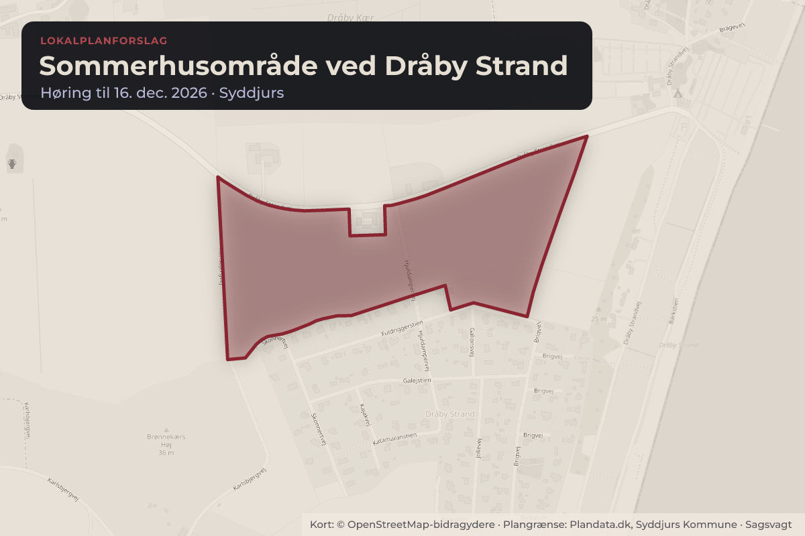
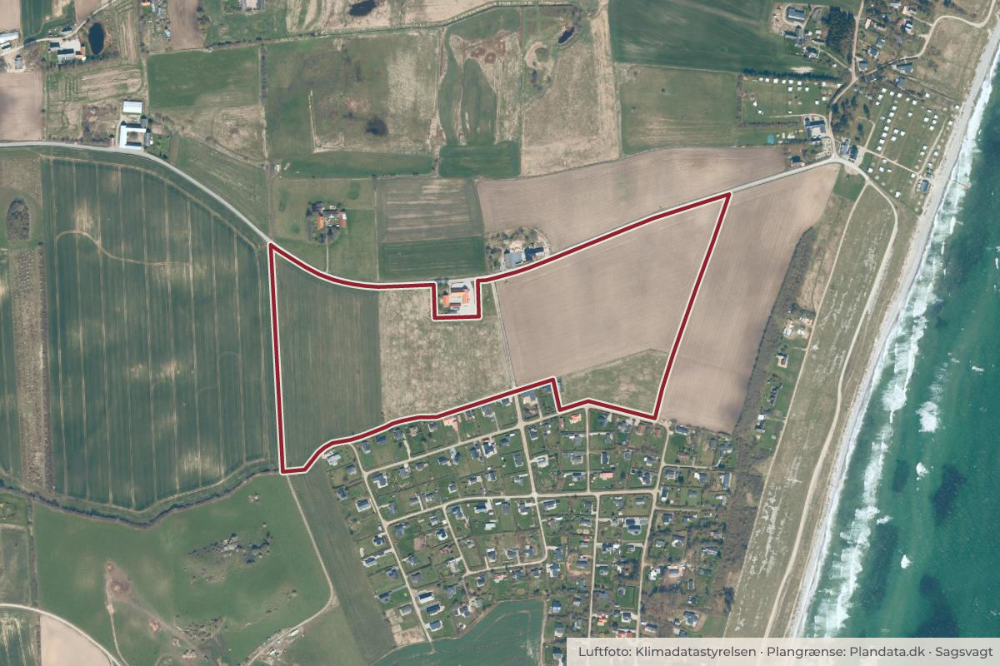

Besluttet 2. september, Erhvervs- og planudvalget, Syddjurs
Lokalplan 474 for sommerhusområde ved Dråby Strand. Forslag

Kort: © OpenStreetMap-bidragydere. Plangrænse: Plandata.dk, Syddjurs Kommune.

Kort fortalt
- Hvem
- Erhvervs- og planudvalget, Syddjurs Kommune
- Hvornår
- Onsdag 2. september 2026
- Status
- Besluttet. Ad 1) Indstilles til godkendelse Ad 2) Godkendt Udvalget ønsker en nærmere redegørelse for spildevandshåndtering i området.
- Næste skridt
- Forudsat den politiske godkendelse, udsendes lokalplanen i offentlig høring i otte uger.
Er noget forkert her? Skriv til os
Læs hele sagen Kommunens egen tekst
Sagsfremstilling
Erhvervs- og planudvalget godkendte den 8. juni 2022 igangsætning af udarbejdelse af lokalplan for sommerhusområde ved Dråby Strand.
Lokalplanområdet blev udpeget som udlæg til nyt sommerhusområde i Syddjurs Kommunes tillæg til Planstrategi 2015 ”By- og turismeudvikling i kystnærhedszonen i Syddjurs Kommune” og efterfølgende muliggjort som sommerhusområde i kystnærhedszonen ved et landsplansdirektiv.
Planlægningen sker efter ansøgning fra privat bygherre, som ønsker at udvikle området i henhold til kommuneplanen.
Lokalplanforslaget er i overensstemmelse med Kommuneplan 2024.
Lokalplanens område
Lokalplanområdet udgør cirka 16 ha og ligger cirka 2 kilometer øst for Dråby. Mod syd grænser lokalplanområdet op til det eksisterende sommerhusområde Dråby Bakker. Mod vest afgrænses området af Karlsbjergvej og mod nord af Dråby Strandvej. Mod øst grænser lokalplanområdet op til åbent land, der går over i kystlandskab og stranden ved Kattegat.
Lokalplanens formål og indhold
Lokalplanens formål er at muliggøre etablering af sommerhuse med det fællestræk, at de alle er opført inden for byggefelter i et stort grønt fællesareal. Lokalplanen skal desuden sikre plads til håndtering af overfladevand og spildevand samt gode forhold for færdsel og sammenhæng med de omkringliggende områder ved udlæg af veje og stier.
Lokalplanen fastlægger anvendelse af området til sommerhusområde og giver mulighed for, at der kan opføres op til 108 sommerhuse, som placeres inden for afgrænsede byggefelter. I byggefelterne kan der etableres sommerhus på op til 180 m2 samt op til 50 m2 sekundær bebyggelse i form af udhus, overdækninger med videre, svarende til en bebyggelsesprocent på maksimum 15%. Byggefelterne i lokalplanen fastlægges spredt ud i terrænet. Den øvrige del af sommerhusområdet består af et samlet fællesareal, der ligger mellem byggefelterne og er fælles for områdets beboere og brugere. Fællesarealet indgår som en del af sommerhusgrundene, når grundstørrelsen beregnes i henhold til kommuneplanens og bygningsreglementets bestemmelser herom.
Der er udarbejdet en vandforvaltningsstrategi, der sikrer, at overfladevand kan håndteres på egen grund, samt at spildevandshåndteringen kan ske med lokale minirensningsanlæg.
Miljøscreening
I henhold til miljøvurderingsloven skal det vurderes, om planlægningen vil medføre væsentlige miljøpåvirkninger, som kræver udarbejdelse af en miljørapport. Planlægningen er screenet for miljøpåvirkninger, og Administrationen har efterfølgende vurderet, at planlægningen ikke vil medføre væsentlige belastninger af miljøet. Der er derfor ikke foretaget yderligere miljøvurdering.
Lokalplanforslaget med miljøscreening er vedlagt som bilag 1.
Vurdering
Lokalplanen understøtter Syddjurs Kommunes strategi for udlæg af nye sommerhusområder i kystnærhedszonen, som er muliggjort med kommunens planstrategi samt et efterfølgende landsplandirektiv og herefter fastlagt i kommuneplanen.
Økonomi og organisatoriske konsekvenser
Administrationens indstilling har ingen økonomiske konsekvenser.
Videre proces
Forudsat den politiske godkendelse, udsendes lokalplanen i offentlig høring i otte uger.
Efter den offentlige høring vurderes de indkomne høringssvar, og lokalplanen fremsendes til endelig vedtagelse af Byrådet med eventuelle ændringer som følge af de indkomne høringssvar. Efter vedtagelsen offentliggøres lokalplanen.
Det er muligt at klage over retslige forhold i en vedtaget lokalplan inden for en klagefrist på fire uger fra offentliggørelsen af den endelige plan.
Lovgrundlag
Planloven – Lovbekendtgørelse nr. 572 af 29. maj 2024.
Lov om miljøvurdering af planer og af konkrete projekter (VVM). Lovbekendtgørelse nr. 4 af 3. januar 2023.
Indstilling
Direktøren for Udvikling og Kultur indstiller til
1) Byrådet via Erhvervs- og planudvalget og Økonomiudvalget, at godkende, at lokalplan 474 vedtages som forslag og fremlægges i offentlig høring i otte uger.
2) Erhvervs- og planudvalget, at godkende, at der i høringsperioden afholdes et offentligt møde mandag den 2. november 2026, klokken 17.30.
Beslutning
Ad 1) Indstilles til godkendelse
Ad 2) Godkendt
Udvalget ønsker en nærmere redegørelse for spildevandshåndtering i området.
Bilag
Kilde: Syddjurs Kommune, Erhvervs- og planudvalget, referat fra mødet onsdag 2. september 2026, punkt 96. Læs den originale sag hos kommunen.